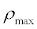

Controls the number of times a ray may be split into specular components.
Syntax
SPLIT [ n ] [ MONTECARLO ] [ 'c' ]
TRAN
REFL
NORM
OFF
| Option | Description |
|---|---|
| MONTECARLO | no additional specular and/or scatter rays are created |
| n | maximum number of times a ray can be split into specular components |
| OFF | resets n to zero |
| TRAN, REFL, or NORM | split trace operation selection; NORM is the default |
| c | fractional energy cutoff for ray splitting |
Remarks
- This command can be used either as a local command to override defaults for the current object, or as a global command. In the latter case, the command acts as an interface control and becomes the default used by any object for which it is not explicitly set. Since the global command is identical to the OBJECT subcommand, make sure you are not at the OBJ> prompt when you use it as a global command. If you are, issue a RETURN command first.
- SPLIT can be applied on an OBJECT by OBJECT basis. In effect, this is now an OBJECT modifier, similar to the INTERFACE command.
- Controls the splitting of the children rays, which are rays that have been split off a parent ray. Therefore, SPLIT 1 tells ASAP to split the parent rays, but the children rays are not allowed to split. SPLIT 2 allows the parent rays and the children rays to split as often as necessary, but the grandchildren rays are not allowed to split, and so on. The parent ray is a ray originally created by the GRID or RAYSET commands.
- Since the total number of rays to be traced can become quite large, SPLIT should be used with some attention to the possible consequences of generating a large number of split rays. For a typical application such as ghost image analysis, n=2 is sufficient.
- Even though ASAP has virtual ray storage, you are practically limited by your total free disk storage and long run times. Therefore, the default deterministic splitting should be used with these restrictions in mind.
- Splitting may occur at interfaces with nonzero reflection and transmission coefficients as well as on diffraction gratings with multiple orders. When ASAP encounters a nonzero reflection and transmission coefficient on an INTERFACE command, it automatically sets SPLIT to 1.
- Normally, if the transmission coefficient is equal to or greater than the reflection coefficient, the transmitted ray is the first ray propagated. If the reflection coefficient is greater than the transmission coefficient, the reflected ray is the first ray propagated. The split trace option selection allows the most energetic ray at NORMal incidence (the default), the TRAN,smitted or REFLected component to be traced first, while the other component is traced later.
- Total internal reflection is considered a ray error unless SPLIT is turned on.
- With the MONTECARLO option, no additional specular and/or scattered rays are created. Both the total number of rays and the total power summed over all rays are conserved. The direction of each ray after intersecting an object is selected randomly from among the assigned reflection, refraction, diffraction, or scatter properties. The probability that a given direction is selected is proportional to the flux that would actually reflect, refract, or scatter into that direction. If the total power from reflection, refraction, diffraction, and scatter is less than 1 on an object, the ray may stop on that object. This represents absorption by that object. When the MONTECARLO option is selected, you must arrange the interface and scatter commands so the total power from reflection, refraction, diffraction, and scatter never exceeds 1 for any angle of incidence.
- When the TOWARDS command
is used to simulate scatter from an object, the following rules should be carefully
followed:
- If a surface has a Lambertian scatter model attached to it, the entry on the TOWARDS command for the number of scattered rays should be 1. Entering a larger value slows the ray trace and does not improve the accuracy of the calculation.
- For surfaces that have a non-Lambertian scatter model, the accuracy of the calculation improves as the entry for the number of scattered rays gets larger.
- For non-Lambertian BRDFs, if the
maximum BRDF over all relevant angles of incidence and scatter is , the number of scattered rays N on the
TOWARDS command should be greater than
 .
. -
In most cases, the TOWARDS SPEC option should be used with scatter into the hemisphere above the surface: TOWARDS SPEC (N) 3.14/2 0 where N is the entry for the number of scattered rays.
- For a typical application such as ghost image analysis, a value of 2 for n is sufficient.
- If the fractional energy in the split-off ray/beam is below c (default 1.E-6), splitting does not occur, that is, only the main component is propagated.
- To control the level of scattered component splitting, use the parallel command LEVEL. Sets the default refraction/reflection controls for all objects or may be applied only to a specific object.
-
Assuming the presence of the Fresnel equations, the global SPLIT cannot be 0 if there are any COATING PROPERTY
BARE commands. The global value will be reset to 1. If the initial
global SPLIT is greater than 0, encountering a COATING PROPERTY BARE command does not alter the SPLIT value.
Example:
SYSTEM NEW RESET MEDIA 1.5 'GLASS' FRESNEL AVE SPLIT 0 !!GLOBAL SPLIT IS 0 SURFACE PLANE Z 1 RECT 1 1 OBJECT 'PLANE1' INTERFACE COATING BARE AIR GLASS SPLIT 4 !!GLOBAL SPLIT IS 1; LOCAL ON PLANE1 IS 4 RETURN SPLIT 0 !!GLOBAL SPLIT IS 0 SURFACE PLANE Z 2 RECT 1 1 OBJECT 'PLANE2' INTERFACE COATING BARE AIR GLASS !!GLOBAL SPLIT IS 1; LOCAL ON PLANE2 IS 1 RETURN SPLIT 3 !!GLOBAL SPLIT IS 3 SURFACE PLANE Z 3 RECT 1 1 OBJECT 'PLANE3' INTERFACE COATING BARE AIR GLASS SPLIT 0 !!GLOBAL SPLIT IS 3; LOCAL ON PLANE3 IS 0 RETURN